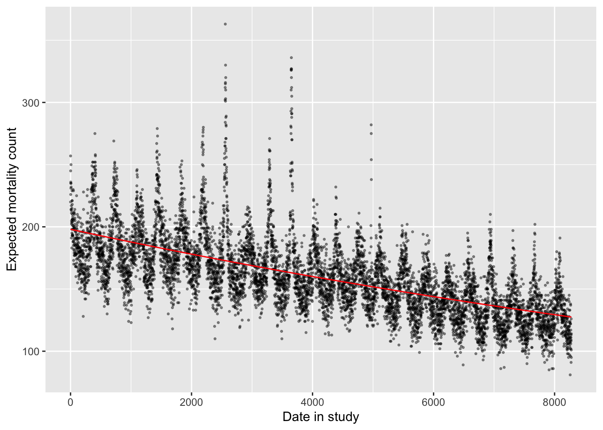
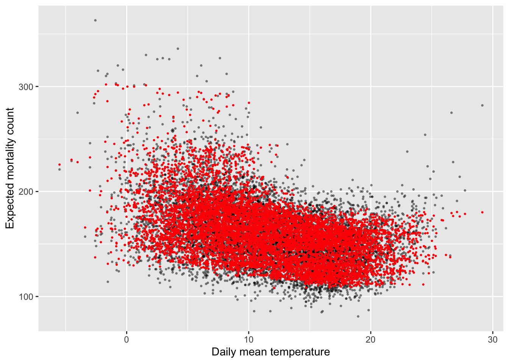

Chapter 4 Generalized linear models
The readings for this chapter are the same as for the last chapter:
- Vicedo-Cabrera, Sera, and Gasparrini (2019), with supplemental material available to download by clicking http://links.lww.com/EDE/B504
- Armstrong, Gasparrini, and Tobias (2014), with supplemental material available at https://bmcmedresmethodol.biomedcentral.com/articles/10.1186/1471-2288-14-122#Sec13
4.1 Splines in GLMs
We saw from the latest model with a linear for mean daily temperature that the suggested effect on mortality is a decrease in daily mortality counts with increasing temperature. However, as you’ve probably guessed that’s probably not entirely accurate. A linear term for the effect of exposure restricts us to an effect that can be fitted with a straight line (either a null effect or a monotonically increasing or decreasing effect with increasing exposure).
This clearly is problematic in some cases. One example is when exploring the association between temperature and health risk. Based on human physiology, we would expect many health risks to be elevated at temperature extremes, whether those are extreme cold or extreme heat. A linear term would be inadequate to describe this kind of U-shaped association. Other effects might have a threshold—for example, heat stroke might have a very low risk at most temperatures, only increasing with temperature above a certain threshold. [Maybe add images of these kinds of associations?]
We can capture non-linear patterns in effects, by using different functions of X. Examples are \(\sqrt{X}\), \(X^{2}\), or more complex smoothing functions, such as polynomials or splines. Polynomials might at first make a lot of sense, especially since you’ve likely come across polynomial terms in mathematics classes since grade school. However, it turns out that they have some undesirable properties. A key one is that they can have extreme behavior, particularly when using a high-order polynomial, and particularly outside the range of data that are available to fit the model.
An alternative that is generally preferred for environmental epidemiology studies is the regression spline. Regression splines are simple parametric smoothing function, which fit separate polynomial in each interval of the range of the predictor; these can be linear, quadratic, and cubic. An example of a (in this case cubic) spline function is \(X+X^{2}+X^{3}+I((X>X_{0})*(X-X_{0})^3)\).This particular function is a cubic spline with four degrees of freedom (\(df=4\)) and one not (\(X_{0}\)). A special type of spline called a natural cubic spline is particularly popular. Unlike a polynomial function, a natural cubic spline “behaves” better outside the range of the data used to fit the model—they are constrained to continue on a [linear?] trajectory once they pass beyond the range of the data. [Maybe add more / clarify / add references on the point of why splines versus polynomials.]
Regression splines can be fit in a GLM via the package splines. Two commonly
used examples of regression splines are b-splines and natural cubic
splines. Vicedo-Cabrera, Sera, and Gasparrini (2019) uses natural cubic splines.
Applied: Including a spline in a GLM
For this exercise, you will continue to build up the model that you began in the examples in the previous chapter. The example uses the data provided with one of this chapter’s readings, Vicedo-Cabrera, Sera, and Gasparrini (2019).
- Start by fitting a somewhat simple model—how are daily mortality counts associated with (a) a linear and (b) a non-linear function of time? Is a linear term appropriate to describe this association? What types of patterns are captured by a non-linear function that are missed by a linear function?
- In the last chapter, the final version of the model used a GLM with an overdispersed Poisson distribution, including control for day of week. Start from this model and add control for long-term and seasonal trends over the study period.
- Refine your model to fit for a non-linear, rather than linear, function of temperature in the model. Does a non-linear term seem to be more appropriate than a linear term?
Applied exercise: Example code
- Start by fitting a somewhat simple model—how are daily mortality counts associated with (a) a linear and (b) a non-linear function of time?
It is helpful to start by loading the R packages you are likely to need, as well as the example dataset. You may also need to re-load the example data and perform the steps taken to clean it in the last chapter:
# Load some packages that will likely be useful
library(tidyverse)
library(viridis)
library(lubridate)
library(broom)
# Load and clean the data
obs <- read_csv("data/lndn_obs.csv") %>%
mutate(dow = wday(date, label = TRUE))For this first question, the aim is to model the association between time and daily mortality counts within the example data. This approach is often used to explore and, if needed, adjust for temporal factors in the data.
There are a number of factors that can act over time to create patterns in both environmental exposures and health outcomes. For example, there may be changes in air pollution exposures over the years of a study because of changes in regulations or growth or decline of factories and automobile traffic in an area. Changes in health care and in population demographics can cause patterns in health outcomes over the study period. At a shorter, seasonal term, there are also factors that could influence both exposures and outcomes, including seasonal changes in climate, seasonal changes in emissions, and seasonal patterns in health outcomes.
It can be difficult to pinpoint and measure these temporal factors, and so instead a common practice is to include model control based on the time in the study. This can be measured, for example, as the day since the start of the study period.
You can easily add a column for day in study for a dataset that
includes date. R saves dates in a special format, which we’re using the in
obs dataset:
## [1] "Date"However, this is just a fancy overlay on a value that’s ultimately saved as
a number. Like most Unix programs, the date is saved as the number of days
since the Unix “epoch”, January 1, 1970. You can take advantage of this
convention—if you use as.numeric around a date in R, it will give you a
number that gets one unit higher for every new date. Here’s the example for
the first date in our example data:
## [1] "1990-01-01"## [1] 7305And here’s the example for the next date:
## [1] "1990-01-02"## [1] 7306You can use this convention to add a column that gives days since the first
study date. While you could also use the 1:n() call to get a number for
each row that goes from 1 to the number of rows, that approach would not
catch any “skips” in dates in the data (e.g., missing dates if only warm-season
data are included). The use of the dates is more robust:
## # A tibble: 8,279 x 2
## date time
## <date> <dbl>
## 1 1990-01-01 0
## 2 1990-01-02 1
## 3 1990-01-03 2
## 4 1990-01-04 3
## 5 1990-01-05 4
## 6 1990-01-06 5
## 7 1990-01-07 6
## 8 1990-01-08 7
## 9 1990-01-09 8
## 10 1990-01-10 9
## # … with 8,269 more rowsAs a next step, it is always useful to use exploratory data analysis to look at the patterns that might exist for an association, before you start designing and fitting the regression model.
There are clear patterns between time and daily mortality counts in these data. First, there is a clear long-term pattern, with mortality rates declining on average over time. Second, there are clear seasonal patterns, with higher mortality generally in the winter and lower rates in the summer.
To model this, we can start with fitting a linear term. In the last chapter,
we determined that the mortality outcome data can be fit using a GLM with a
Poisson family, allowing for overdispersion as it is common in real-life
count data like these. To include time as a linear term, we can just include
that column name to the right of the ~ in the model formula:
You can use the augment function from the broom package to pull out the
fitted estimate for each of the original observations and plot that, along
with the observed data, to get an idea of what this model has captured:
mod_time %>%
augment() %>%
ggplot(aes(x = time)) +
geom_point(aes(y = all), alpha = 0.4, size = 0.5) +
geom_line(aes(y = exp(.fitted)), color = "red") +
labs(x = "Date in study", y = "Expected mortality count") 
[Check for termplot]
This linear trend captures the long-term trend in mortality rates fairly well in this case. This won’t always be the case, as there may be some health outcomes—or some study populations—where the long-term pattern over the study period might be less linear than in this example. Further, the linear term is completely unsuccessful in capturing the shorter-term trends in mortality rate. These oscillate, and so would be impossible to capture over multiple years with a linear trend.
Instead, it’s helpful to use a non-linear term for time in the model. We can
use a natural cubic spline for this, using the ns function from the splines
package. You will need to clarify how flexible the spline function should be,
and this can be specified through the degrees of freedom for the spline. A
spline with more degrees of freedom will be “wigglier” over a given data range
compared to a spline with fewer degrees of freedom. Let’s start by using
158 degrees of freedom, which translates to about 7 degrees of freedom per year:
library(splines)
mod_time_nonlin <- glm(all ~ ns(time, df = 158),
data = obs, family = "quasipoisson")You can visualize the model results in a similar way to how we visualized the
last model. However, there is one extra step. The augment function only
carries through columns in the original data (obs) that were directly used
in fitting the model. Now that we’re using a transformation of the time
column, by wrapping it in ns, the time column is no longer included in the
augment output. However, we can easily add it back in using mutate,
pulling it from the original obs dataset, and then proceed as before.
mod_time_nonlin %>%
augment() %>%
mutate(time = obs$time) %>%
ggplot(aes(x = time)) +
geom_point(aes(y = all), alpha = 0.4, size = 0.5) +
geom_line(aes(y = exp(.fitted)), color = "red") +
labs(x = "Date in study", y = "Expected mortality count") 
The non-linear term for time has allowed enough flexibility that the model now captures both long-term and seasonal trends in the data.
[More on how to pick a good d.f. for an env. epi. model like this]. In practice, researchers often using about 6–8 degrees of freedom per year of the study, in the case of year-round data. You can explore how changing the degrees of freedom changes the way the model fits to the observed data. As you use more degrees of freedom, the line will capture very short-term effects, and may start to interfere with the shorter-term associations between environmental exposures and health risk that you are trying to capture. Even in the example model we just fit, for example, it looks like the control for time may be capturing some patterns that were likely caused by heatwaves (the rare summer peaks, including one from the 1995 heatwave). Conversely, if too few degrees of freedom are used, the model will shift to look much more like the linear model, with inadequate control for seasonal patterns.
# A model with many less d.f. for the time spline
mod_time_nonlin_lowdf <- glm(all ~ ns(time, df = 10),
data = obs, family = "quasipoisson")
mod_time_nonlin_lowdf %>%
augment() %>%
mutate(time = obs$time) %>%
ggplot(aes(x = time)) +
geom_point(aes(y = all), alpha = 0.4, size = 0.5) +
geom_line(aes(y = exp(.fitted)), color = "red") +
labs(x = "Date in study", y = "Expected mortality count") # A model with many more d.f. for the time spline
# (Takes a little while to run)
mod_time_nonlin_highdf <- glm(all ~ ns(time, df = 400),
data = obs, family = "quasipoisson")
mod_time_nonlin_highdf %>%
augment() %>%
mutate(time = obs$time) %>%
ggplot(aes(x = time)) +
geom_point(aes(y = all), alpha = 0.4, size = 0.5) +
geom_line(aes(y = exp(.fitted)), color = "red") +
labs(x = "Date in study", y = "Expected mortality count") 
In all cases, when you fit a non-linear function of an explanatory variable, it will make the model summary results look much more complicated, e.g.:
## # A tibble: 11 x 5
## term estimate std.error statistic p.value
## <chr> <dbl> <dbl> <dbl> <dbl>
## 1 (Intercept) 5.26 0.00948 555. 0.
## 2 ns(time, df = 10)1 -0.0260 0.0119 -2.18 2.93e- 2
## 3 ns(time, df = 10)2 -0.0860 0.0155 -5.56 2.85e- 8
## 4 ns(time, df = 10)3 -0.114 0.0139 -8.15 4.01e- 16
## 5 ns(time, df = 10)4 -0.196 0.0151 -13.0 4.47e- 38
## 6 ns(time, df = 10)5 -0.187 0.0148 -12.6 2.80e- 36
## 7 ns(time, df = 10)6 -0.315 0.0154 -20.5 5.62e- 91
## 8 ns(time, df = 10)7 -0.337 0.0154 -21.9 1.95e-103
## 9 ns(time, df = 10)8 -0.358 0.0135 -26.5 1.56e-148
## 10 ns(time, df = 10)9 -0.467 0.0244 -19.2 4.49e- 80
## 11 ns(time, df = 10)10 -0.392 0.0126 -31.2 8.01e-202You can see that there are multiple model coefficients for the variable fit
using a spline function, one less than the number of degrees of freedom. These
model coefficients are very hard to interpret on their own. When we are using
the spline to control for a factor that might serve as a confounder of the
association of interest, we typically won’t need to try to interpret these
model coefficients—instead, we are interested in accounting for how this
factor explains variability in the outcome, without needing to quantify the
association as a key result. However, there are also cases where we want to
use a spline to fit the association with the exposure that we are interested
in. In this case, we will want to be able to interpret model coefficients from
the spline. Later in this chapter, we will introduce the dlnm package, which
includes functions to both fit and interpret natural cubic splines within
GLMs for environmental epidemiology.
- Start from the last model created in the last chapter and add control for long-term and seasonal trends over the study period.
The last model fit in the last chapter was the following, which fits for the association between a linear term of temperature and mortality risk, with control for day of week:
mod_ctrl_dow <- glm(all ~ tmean + factor(dow, ordered = FALSE),
data = obs, family = "quasipoisson")To add control for long-term and seasonal trends, you can take the natural cubic
spline function of temperature that you just fit and include it among the
explanatory / independent variables from the model in the last chapter. If you
want to control for only long-term trends, a linear term of the time column
could work, as we discovered in the first part of this chapter’s exercise.
However, seasonal trends could certainly confound the association of interest.
Mortality rates have a clear seasonal pattern, and temperature does as well,
and these patterns create the potential for confounding when we look at how
temperature and mortality risk are associated, beyond any seasonally-driven
pathways.
mod_ctrl_dow_time <- glm(all ~ tmean + factor(dow, ordered = FALSE) +
ns(time, df = 158),
data = obs, family = "quasipoisson")You can see the influence of this seasonal confounding if you look at the model
results. When we look at the results from the model that did not control for
long-term and seasonal trends, we get an estimate that mortality rates tend to
be lower on days with higher temperature, with a negative term for tmean:
## # A tibble: 1 x 5
## term estimate std.error statistic p.value
## <chr> <dbl> <dbl> <dbl> <dbl>
## 1 tmean -0.0148 0.000354 -41.7 0Conversely, when we include control for long-term and seasonal trends, the estimated association between mortality rates and temperature is reversed, estimating increased mortality rates on days with higher temperature, controlling for long-term and seasonal trends:
## # A tibble: 1 x 5
## term estimate std.error statistic p.value
## <chr> <dbl> <dbl> <dbl> <dbl>
## 1 tmean 0.00370 0.000395 9.36 1.02e-20- Refine your model to fit for a non-linear, rather than linear, function of temperature in the model.
You can use a spline in the same way to fit a non-linear function for the
exposure of interest in the model (temperature). We’ll start there. However,
as mentioned earlier, it’s a bit tricky to interpret the coefficients from the
fit model—you no longer generate a single coefficient for the exposure of
interest, but instead several related to the spline. Therefore, once we show
how to fit using ns directly, we’ll show how you can do the same thing using
specialized functions in the dlnm package. This package includes a lot of
nice functions for not only fitting an association using a non-linear term,
but also for interpreting the results after the model is fit.
First, here is code that can be used to fit the model using ns directly,
similarly to the approach we used to control for temporal patterns with a
flexible function:
mod_ctrl_nl_temp <- glm(all ~ ns(tmean, 4) + factor(dow, ordered = FALSE) +
ns(time, df = 158),
data = obs, family = "quasipoisson")mod_time_nonlin_highdf %>%
augment() %>%
mutate(tmean = obs$tmean) %>%
ggplot(aes(x = tmean)) +
geom_point(aes(y = all), alpha = 0.4, size = 0.5) +
geom_point(aes(y = exp(.fitted)), color = "red", size = 0.4) +
labs(x = "Daily mean temperature", y = "Expected mortality count") 
4.2 Cross-basis functions in GLMs
[Using a cross-basis to model an exposure’s association with the outcome in two dimensions (dimensions of time and exposure level)]
4.3 Chapter vocabulary
Each class will start with a vocabulary quiz on a select number of the words from the chapter’s vocabulary list. The vocabulary words for this chapter are:
References
Armstrong, Ben G, Antonio Gasparrini, and Aurelio Tobias. 2014. “Conditional Poisson Models: A Flexible Alternative to Conditional Logistic Case Cross-over Analysis.” BMC Medical Research Methodology 14 (1): 122.
Vicedo-Cabrera, Ana M, Francesco Sera, and Antonio Gasparrini. 2019. “Hands-on Tutorial on a Modeling Framework for Projections of Climate Change Impacts on Health.” Epidemiology 30 (3): 321–29.